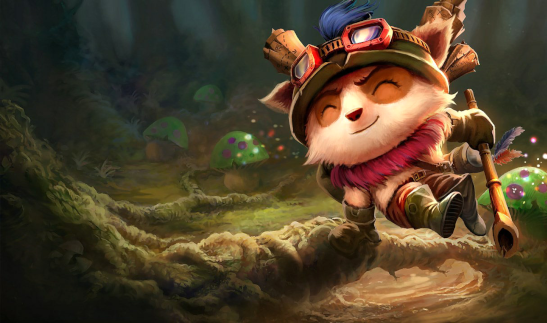
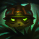
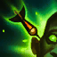
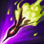

Teemo, O Explorador Veloz
Rota
-
Passiva
 -
Habilidade Q
DARDO OFUSCANTE
Obscurece a visão de um inimigo com um poderoso veneno, causando dano à unidade-alvo e cegando-a pela duração do efeito.
-
Habilidade W
MOVER DEPRESSA
Teemo corre por aí, aumentando passivamente sua Velocidade de Movimento até que seja atingido por um Campeão ou torre inimiga. Ele pode sair em disparada para receber Velocidade de Movimento adicional que não é interrompida por ataques por um certo período.
-
Habilidade R
ARMADILHA VENENOSA
Teemo arremessa uma armadilha venenosa explosiva usando um dos cogumelos que guardou na mochila. Se um inimigo pisar na armadilha, ela soltará uma nuvem venenosa que causa dano e reduz a velocidade de inimigos ao longo do tempo. Se Teemo arremessar um cogumelo em cima de outro, ele saltará, recebendo alcance adicional.
Habilidades
TÉCNICAS DE GUERRILHA
Se Teemo permanecer imóvel e não fizer nada por um curto período, fica Invisível por tempo indefinido. Caso esteja em um arbusto, Teemo pode manter sua Invisibilidade enquanto se move. Ao sair da Invisibilidade, Teemo ativa Elemento Surpresa, aumentando a própria Velocidade de Ataque por alguns segundos.
Habilidade E
TIRO TÓXICO
Cada um dos ataques de Teemo envenenará o alvo, causando dano no impacto e a cada segundo seguinte por 4 segundos.
Curiosidade
Indiferente até aos obstáculos mais perigosos e ameaçadores, Teemo vasculha o mundo com infinito entusiasmo e animação. Um yordle com uma inabalável moral que se orgulha de seguir o Código dos Escoteiros de Bandópolis, às vezes com tanta dedicação que não se toca das possíveis consequências de suas ações. Embora alguns duvidem da existência dos escoteiros, uma coisa é certa: nunca se deve duvidar das convicções de Teemo.